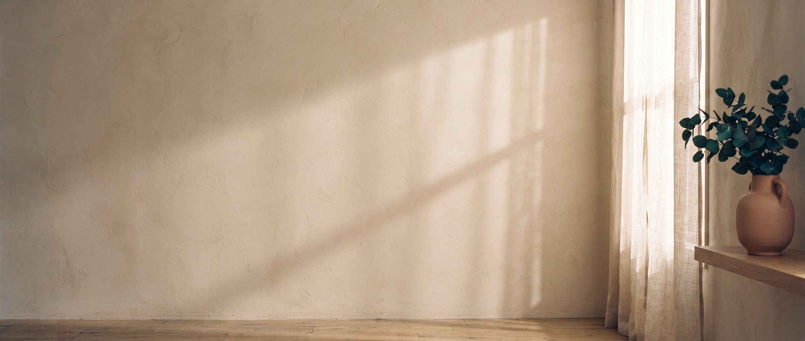

Психолог · индивидуальные консультации
Никита Потапов
«Психолог, который всегда с тобой»
Помогаю разобраться в себе, вернуть опору и справиться с тем, с чем пока не получается одному.
Кто я
Сначала по-настоящему услышать и понять — потом помогать.
Меня зовут Никита. Я практикующий психолог: помогаю людям становиться сильнее, преодолевать трудности и по-настоящему разбираться в себе. Со мной находят опору, которой раньше не хватало.
За тёплым тоном стоит настоящая экспертиза — и она никогда не превращается в холодные термины или поучения свысока. Здесь не осудят. Здесь помогут разобраться.
- 3+года частной практики
- МПСУмагистр психологии
- ∞постоянное обучение и профессиональные сообщества
С чем приходят
Три направления работы
-
01
Отношения и самооценка
Трудности с партнёром, неуверенность в себе, ощущение, что застрял и не можешь сдвинуться сам. Вместе вернём устойчивость и внутреннюю опору.
-
02
Личностный рост
Слабая самооценка, сложно уверенно идти к целям. Разберёмся, что тебя останавливает, и укрепим характер — шаг за шагом.
-
03
Отношения в семье
Разберём привычные сценарии и научимся заменять критику конструктивным диалогом — чтобы каждый чувствовал свою значимость. Ты унесёшь с сессий инструменты для текущих разногласий и поймёшь, как выстраивать границы без потери близости.
Обратиться к психологу — нормально и не стыдно. Моё пространство одинаково безопасно для мужчин и женщин: здесь выслушают без осуждения, спокойно и по-человечески.

Как проходит
Три простых шага
-
Позвонишь
Расскажешь, что происходит, своими словами. Можно коротко и сумбурно — так тоже нормально.
-
Первая встреча
Познакомимся, разберём запрос и решим, как будем работать. Без диагнозов, оценок и обещаний волшебства за один сеанс.
-
Регулярная работа
Идём в твоём темпе. Я не решаю за тебя — помогаю стать сильнее и найти собственную опору.
Пауза
Один медленный выдох — прямо сейчас
вдох
Дыши вместе с кругом: вдох 4 секунды, выдох 6. Это простейшая практика заземления — из тех, что забираешь с собой после консультаций.
Ценности
На чём всё держится
1Принятие без осуждения
К каждому — с уважением, каким бы ни был запрос. Твоя безопасность прежде всего.
2Понимание человека
Сначала по-настоящему услышать — потом помогать. Это суть моей работы.
3Работа над собой
Я не решаю за тебя, а помогаю стать сильнее и найти собственную опору.
4Профессионализм
Магистратура, практика, сообщества и постоянное обучение — за теплом стоит экспертиза.
5Конфиденциальность
То, что сказано на консультации, остаётся между нами. Всегда.
6Быть рядом
«Психолог, который всегда с тобой» — не просто слоган, а про надёжность и присутствие.
Контакт
Понять себя — это уже половина пути. Дальше пойдём вместе.